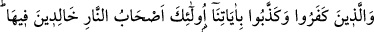
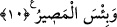

10. İnkâr eden ve âyetlerimizi yalanlayanlara gelince, işte onlar cehennem
ehlidirler. Orada ebedî kalacaklardır. Ne kötü gidilecek yerdir orası!
“İnkâr eden ve âyetlerimizi yalanlayanlara gelince,” Bu âyet-i kerime zorunlu
olarak bilinen şeyi açıklamaktadır. Burada yer alan “âyetlerimizi” ifâdesi ile Kur’an
veya mucizeler kasdedilmektedir. Çünkü bunların her biri Peygamber (s.a.)’in doğru
söylediğine delildir.
“İşte onlar” orada ebedî kalmak üzere “cehennem ehlidirler.” Bu “ashâbü’n-
nâr/cehennem ehli” ifâdesinin mânâsı, ya içinde ebedî kalacakları için, cehennem
yârânıdırlar anlamına ya da cehennemin mâlikleridir anlamınadır. Bu ikinci mânâya
göre, kâfirler alaya alınmak için sanki cehennemin sâhipleri mertebesine
indirilmişlerdir. “Orada ebedî kalacaklardır.” Buradaki “ebedî” kaydı, bir önceki
âyette zikredildiği ve bu âyet de onun mukabili olduğu için getirilmiştir.
“Ne kötü gidilecek yerdir orası!” yâni cehennem. Bu son iki âyet-i kerime sanki
karşılıklı aldanmanın nasıl olacağını açıklamaktadır. Sanki anlamına “keenne”
denilmesi, bir önceki âyette bulunan ‘ve men yü’min’in başındaki vav ile bu âyetin
başındaki vav’ın âyeti beyan, şeklinde anlamamıza engel olmasından dolayıdır. Nitekim
bu husus maânî ilminde belirtilmektedir.
Bu âyet-i kerimede, Allah’tan ve ona hakiki îmandan mahrum olmuşlara bir işâret
vardır. Çünkü hakiki îmânın ilim ve burhan/delil ile değil, tatma ve duyma yoluyla olur.
Yine bu âyette Allah’ın seçkin kulları arasında tecellîlere göre îman etmeyip, Allah’ın
zâhir âyetlerini inkâr edenlere de işâret vardır. İşte bu seçkin kullar devamlı ve sürekli
biçimde, hicap nârında ve ihticab cahimindedirler. İşte bu ateş ne kötü bir gidecek
yerdir. Şu halde akıllı olana çalışmak düşer. Çalışsın ki Allah kalbinin körlüğünü
basiretinin perdesini gidersin ve açsın. Ve böylece o, Allah’ın eserlerini nefis ve afakta
var olan delillerini müşahede etsin. Hicaptan mutlak olarak kurtulsun. Âriflerin
nazarında ibret ve hikmet hareketlerinde bir maslahat ve önem vardır.
Anlatırlar ki; Ebû Hafs Nisâbûrî, bir gün arkadaşları ile er-Rabi’de gezintiye çıkar, o
sırada bir konağa rastlar. Konağın içinde çiçekler açmıştır. Ebû Hafs ibret nazarı ile o
konağa baka kalır. Biraz sonra konaktan yaşlı bir mecûsi çıkar, Ebû Hafs’a sorar:
“– Ey hayırlıların önde geleni! Kötülerin önde gelenine misafir olur musun?” Ebû
Hafs:
“– Peki” der ve içeri girerler. Aralarında Kur’an okuyan birisi vardır. Bu kişi
okumasını bitirince mecûsi onlara der ki: